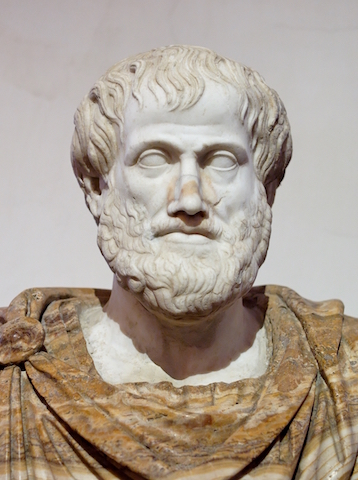

Ethics: Happiness, Friendship & the Good Life

Greek Links
Gobbets
- 12 reading quetions will be assigned. Each reading question consists in several gobbets. For informations about gobbets, see the following guide by the Classics Department at Oxford University here.
Assignments Due
Complete by 3pm on the first day of the week (the date in the brackets).
- Week 2 (9/12/16). Complete by Monday. Please purchase the textbook by week 3.
- Week 3 (9/12/16). See the sylabus for the required reading.
- Gobbets, i.e., reading question 1. This is due by Monday 9/19 at 12pm on Blackboard. (Please note that I won’t continually remind you of the due dates. Assignments are always due on the relevant Monday through Blackboard at 12pm. The syllabus has full details).
- Week 4 (9/26/16). See the syllabus for the required reading.
- Gobbets, i.e., reading question 2. This is due by Monday at 3pm through Blackboard. Note the updated time for submissions. This will be retained for the semester. I won’t remind you of this due date for later weeks.
- Essay 1. This is due by Monday at 3pm through Blackboard. I won’t remind you of this due date for later weeks.
- Week 5 (10/3/26).
- Week 6 (10/10/16).
- Week 7 (10/17/16).
- Week 8 (10/24/16).